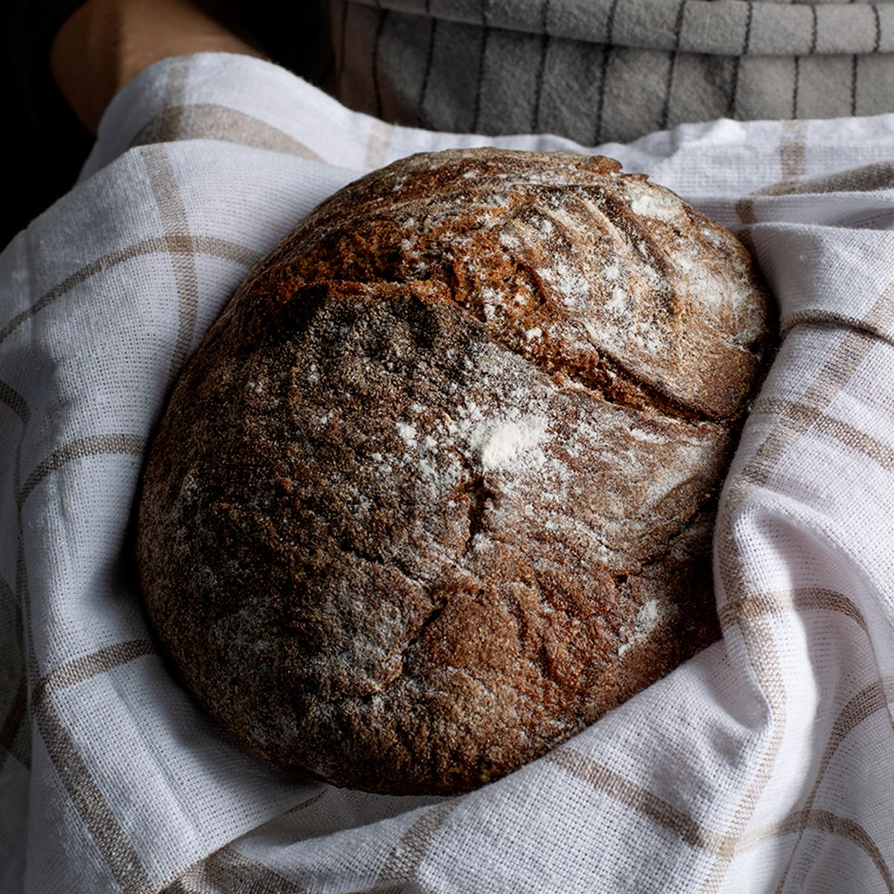
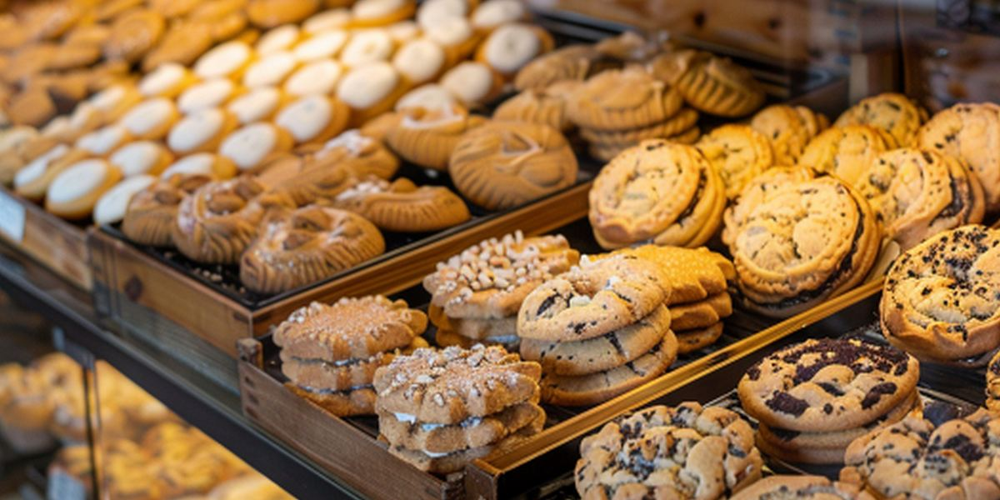

Welcome to North Star Bakery
North Star Bakery has been the heart of the neighborhood for over a decade, baking fresh bread and pastries every morning for commuters, families, and everyone in between. Whether you are stopping in for a quick coffee-shop breakfast or planning a celebration cake, we bake it fresh, we bake it local, and we bake it with you in mind.

What We're Known For
Our sourdough is milled and fermented in-house, our pastry case changes daily, and our custom cakes are made to order for birthdays, weddings, and neighborhood events. Locals know us for showing up early and staying warm all day.
Hours and Location
123 Main Street, your neighborhood, USA
Monday through Saturday: 6:00 AM to 6:00 PM
Sunday: 7:00 AM to 2:00 PM
Featured Item of the Week


Take a look behind the counter and hear a quick welcome from our head baker: